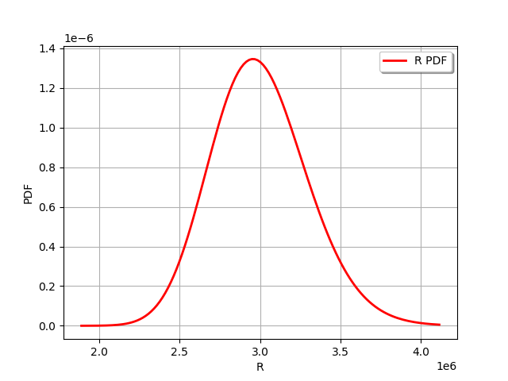
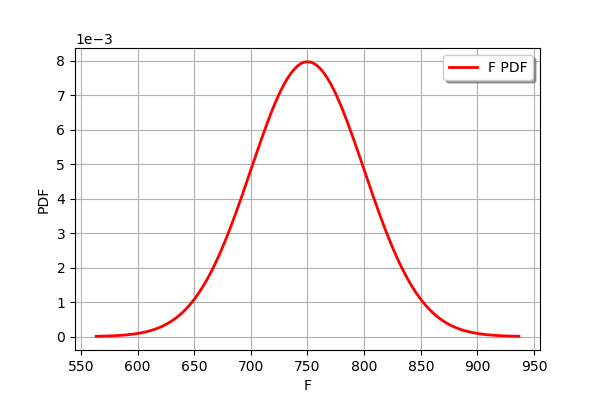
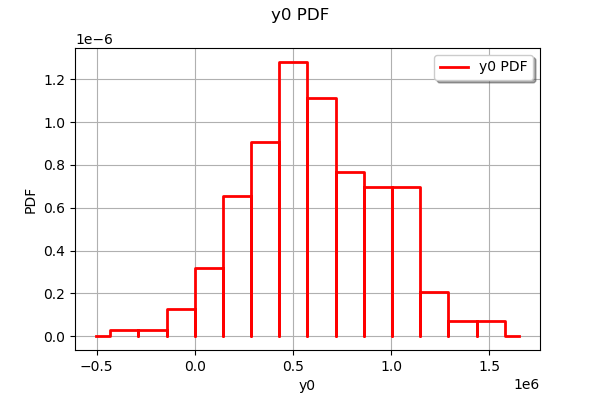
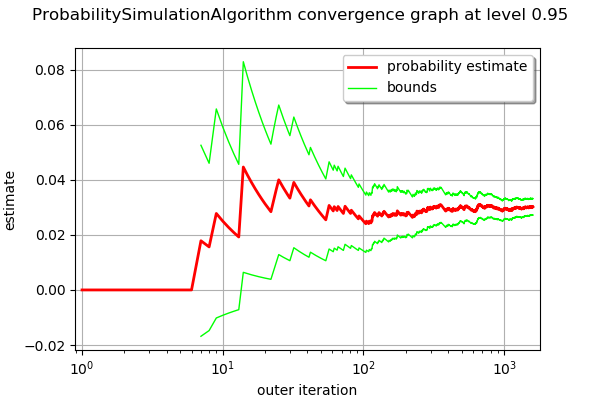

Estimate a probability with Monte-Carlo on axial stressed beam: a quick start guide to reliability¶
The goal of this example is to show a simple practical example of probability estimation in a reliability study with the ProbabilitySimulationAlgorithm class. The ThresholdEvent is used to define the event. We use the Monte-Carlo method thanks to the MonteCarloExperiment class to estimate this probability and its confidence interval.
Introduction¶
We consider a simple beam stressed by a traction load F at both sides.
The geometry is supposed to be deterministic; the diameter D is equal to:
By definition, the yield stress is the load divided by the surface. Since the surface is , the stress is:
Failure occurs when the beam plastifies, i.e. when the axial stress gets larger than the yield stress:

where is the strength.
Therefore, the limit state function is:
for any .
The value of the parameter  is such that:
is such that:
which leads to the equation:
We consider the following distribution functions.
Variable |
Distribution |
|---|---|
R |
LogNormal(, ) [Pa] |
F |
Normal( |
 , ) [N]
, ) [N]where and are the mean and the variance of .
The failure probability is:
The exact  is
is
Definition of the model¶
[1]:
import openturns as ot
import numpy as np
The dimension of the problem.
[2]:
dim = 2
We define the limit state function as a symbolic function.
[3]:
limitStateFunction = ot.SymbolicFunction(['R', 'F'], ['R-F/(1.e-4 * pi_)'])
Before using the function within an algorithm, we check that the limit state function is correctly evaluated.
[4]:
x = [3.e6, 750.]
print('x=', x)
print('G(x)=', limitStateFunction(x))
x= [3000000.0, 750.0]
G(x)= [612676]
Probabilistic model¶
We then create a first marginal, a univariate LogNormal distribution, parameterized by its mean and standard deviation.
[5]:
R = ot.LogNormalMuSigma(3.e6, 3.e5, 0.0).getDistribution()
R.setName('Yield strength')
R.setDescription('R')
[6]:
R.drawPDF()
[6]:

Our second marginal is a Normal univariate distribution.
[7]:
F = ot.Normal(750., 50.)
F.setName('Traction_load')
F.setDescription('F')
[8]:
F.drawPDF()
[8]:

In order to create the input distribution, we use the ComposedDistribution class which associates the distribution marginals and a copula. If no copula is supplied to the constructor, it selects the independent copula as default:
[9]:
myDistribution = ot.ComposedDistribution([R, F])
myDistribution.setName('myDist')
We create a RandomVector from the Distribution, which will then be fed to the limit state function.
[10]:
inputRandomVector = ot.RandomVector(myDistribution)
Finally we create a CompositeRandomVector by associating the limit state function with the input random vector.
[11]:
outputRandomVector = ot.CompositeRandomVector(limitStateFunction, inputRandomVector)
Exact computation¶
The simplest method is to perform an exact computation based on the arithmetic of distributions.
[12]:
D = 0.02
[13]:
G = R-F/(D**2/4 * np.pi)
[14]:
G.computeCDF(0.)
[14]:
0.02919819462483051
This is the exact result from the description of this example.
Distribution of the output¶
Plot the distribution of the output.
[15]:
sampleSize = 500
sampleG = outputRandomVector.getSample(sampleSize)
ot.HistogramFactory().build(sampleG).drawPDF()
[15]:

Estimate the probability with Monte-Carlo¶
We first create a ThresholdEvent based on the output RandomVector, the operator and the threshold.
[16]:
myEvent = ot.ThresholdEvent(outputRandomVector, ot.Less(), 0.0)
The ProbabilitySimulationAlgorithm is the main tool to estimate a probability. It is based on a specific design of experiments: in this example, we use the simplest of all, the MonteCarloExperiment.
[17]:
maximumCoV = 0.05 # Coefficient of variation
maximumNumberOfBlocks = 100000
experiment = ot.MonteCarloExperiment()
algoMC = ot.ProbabilitySimulationAlgorithm(myEvent, experiment)
algoMC.setMaximumOuterSampling(maximumNumberOfBlocks)
algoMC.setBlockSize(1)
algoMC.setMaximumCoefficientOfVariation(maximumCoV)
In order to gather statistics about the algorithm, we get the initial number of function calls (this is not mandatory, but will prove to be convenient later in the study).
[18]:
initialNumberOfCall = limitStateFunction.getEvaluationCallsNumber()
Now comes the costly part: the run method performs the required simulations. The algorithm stops when the coefficient of variation of the probability estimate becomes lower than 0.5.
[19]:
algoMC.run()
We can then get the results of the algorithm.
[20]:
result = algoMC.getResult()
probability = result.getProbabilityEstimate()
numberOfFunctionEvaluations = limitStateFunction.getEvaluationCallsNumber() - initialNumberOfCall
print('Number of calls to the limit state =', numberOfFunctionEvaluations)
print('Pf = ', probability)
print('CV =', result.getCoefficientOfVariation())
Number of calls to the limit state = 12823
Pf = 0.030258129922794978
CV = 0.04999334672427731
The drawProbabilityConvergence method plots the probability estimate depending on the number of function evaluations. The order of convergence is with  being the number of function evaluations. This is why we use a logarithmic scale for the X axis of the graphics.
being the number of function evaluations. This is why we use a logarithmic scale for the X axis of the graphics.
[21]:
graph = algoMC.drawProbabilityConvergence()
graph.setLogScale(ot.GraphImplementation.LOGX)
graph
[21]:

We see that the 95% confidence interval becomes smaller and smaller and stabilizes at the end of the simulation.
In order to compute the confidence interval, we use the getConfidenceLength method, which returns the length of the interval. In order to compute the bounds of the interval, we divide this length by 2.
[22]:
alpha = 0.05
[23]:
pflen = result.getConfidenceLength(1-alpha)
print("%.2f%% confidence interval = [%f,%f]" % ((1-alpha)*100,probability-pflen/2,probability+pflen/2))
95.00% confidence interval = [0.027293,0.033223]
This interval is consistent with the exact probability .
Appendix: derivation of the failure probability¶
The failure probability is:
where is the probability distribution function of the random vector . If R and S are independent, then:
for any , where is the probability distribution function of the random variable  and is the probability distribution function of the random variable . Therefore,
and is the probability distribution function of the random variable . Therefore,
This implies:
Therefore,
where is the cumulative distribution function of the random variable .